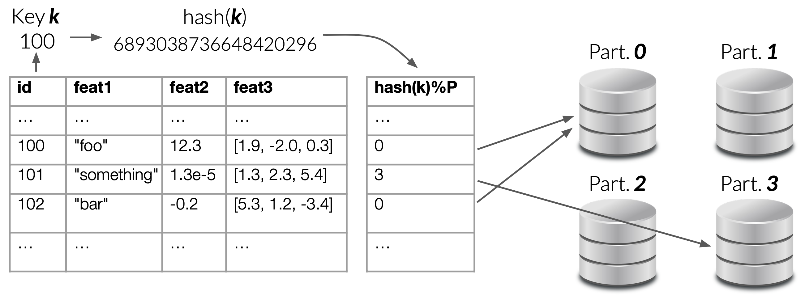
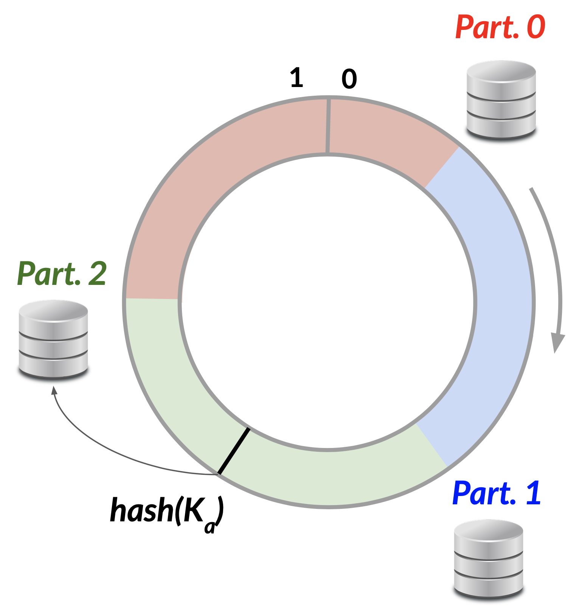
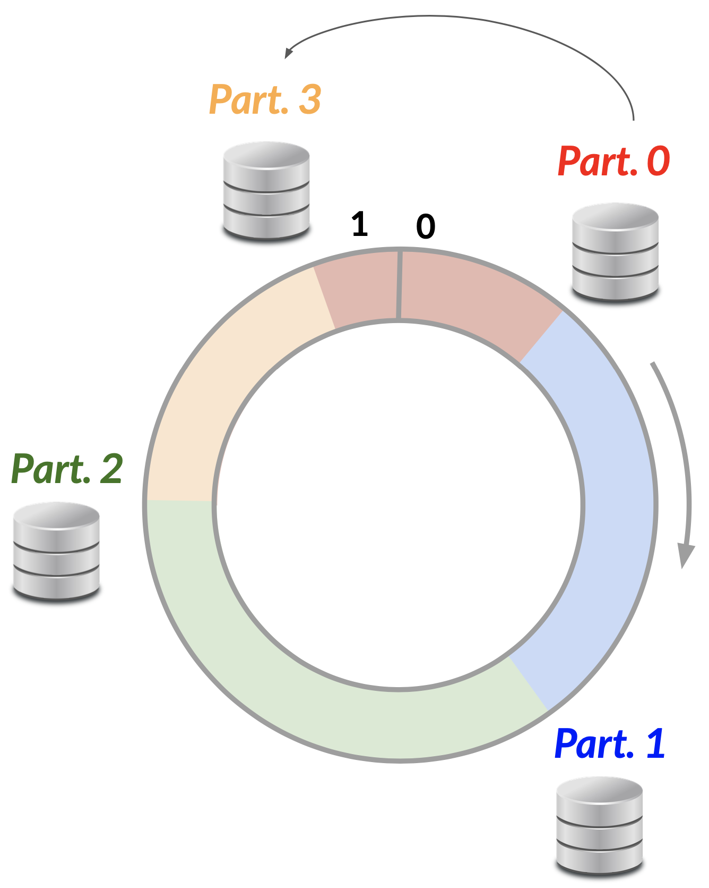

8 NoSQL Databases
The SQL language is perfectly suited to relational databases, which were predominant until the 1990s, when the amount of data generated by the explosion of the internet and web applications became increasingly large. In 1998, computer scientist Carlo Strozzi coined the term NoSQL by creating a database management system that did not require the use of SQL, promoting the idea of open source databases that departed from the traditional relational model.
8.1 Database Partitioning
A first important obstacle in managing a relational database arises with the growth of the quantity of records, which forces the partitioning of the databases — their subdivision into smaller parts.
Vertical partitioning: all records are saved on each disk so that the attributes are divided between disks. This is not a problem for the relational model, since the various partitions can be seen as different tables with the same primary key.
Horizontal partitioning (also called sharding): the records are divided among the different disks so that all attributes associated with the same record are maintained together. This case is not supported by traditional RDBMSs, which require each table to be entirely included in a single memory element.
The idea is to apply a hash function to the primary key, obtaining a number, then perform integer division with the number of available partitions \(P\): the remainder — a number between \(0\) and \(P-1\) — indicates the disk on which to store the record. Formally, given a key \(k\):
\[\text{partition} = \text{hash}(k) \bmod P\]

This method does not respond well in terms of scalability: adding a new disk means going from \(P\) to \(P+1\), requiring all integer divisions to be recalculated and all records moved according to the new indexing. Because the modulus changes, nearly all \(K\) keys must be remapped to different partitions — an \(O(K)\) data movement that is prohibitively expensive in large clusters.
8.1.1 Consistent Hashing
The practical solution is consistent hashing: instead of using modulo arithmetic, both keys and nodes are mapped to positions on a circular hash ring — a continuous space of values from \(0\) to \(2^N - 1\) (for SHA-256, \(N = 256\), giving \(2^{256}\) possible positions).
Each node (partition/disk) is assigned one or more positions on the ring. To look up where a key \(k\) belongs, compute \(\text{hash}(k)\) and walk clockwise around the ring; the first node encountered is responsible for that key.
A “sector” of the ring is associated with each disk, and each digest in the ring is “rounded” to the largest value within the sector where the association with the partition takes place.

When introducing a new disk, it occupies part of a sector previously occupied by another disk. Only the records in that sector need to be transferred — not the entire database. Concretely, only the keys that fall between the new node and its predecessor on the ring need to move — roughly \(O(K/N)\) remappings instead of the \(O(K)\) required by naive modular hashing.

Virtual nodes: to distribute load more uniformly, a single physical node is mapped to multiple positions on the ring (virtual nodes). This smooths out hash-space imbalances and makes rebalancing even more granular when nodes join or leave.
Consistent hashing also lends itself well to data replication: the user chooses a replication factor \(R\); a record stored at its primary node is additionally copied to the next \(R - 1\) nodes clockwise on the ring, ensuring fault tolerance without a separate replication mechanism.
8.2 Characteristics of NoSQL Databases
The four main points that distinguish NoSQL databases from traditional relational ones:
- Flexible models: support for the storage and management of semi-structured and unstructured data, departing from the rigid structured nature of relational databases.
- Horizontal scalability: distribution of databases on multiple nodes of a cluster without significant degradation of performance.
- Simplified queries: languages that do not use complex operations such as
JOIN, favoring faster response times especially in distributed environments. - Models with less consistency: adherence to ACID properties is reduced in favor of the scalability and availability necessary in distributed systems.
8.2.1 BASE vs ACID
The transaction model followed by most NoSQL databases is BASE — Basically Available, Soft state, Eventually consistent (a deliberate contrast with ACID as in chemistry):
- Basically Available: the individual nodes in a network are generally accessible almost always, unlike the ACID model where access could be interrupted due to isolation during a read or write operation.
- Soft state: the state of a database is not rigidly persistent — it may change without a specific intervention by the user, as in the case of data replication across cluster nodes.
- Eventually consistent: consistency is guaranteed only after a certain time, not necessarily at the exact moment a transaction is concluded.
Where ACID prioritises correctness and strict consistency (at the cost of availability under network partitions), BASE trades strict consistency for higher availability and partition tolerance — occupying the AP corner of the CAP theorem. This makes BASE-compliant systems well suited to large-scale distributed deployments where brief inconsistency windows are acceptable.
The last point does not imply that all NoSQL databases are AP. Both availability A and consistency C are guaranteed along a “gradient” — from more stringent conditions (high availability) to more labile conditions (eventual availability). This flexibility allows the same DBMS to accommodate different services and use cases.
The letter C appears in both acronyms but means something completely different:
- C in ACID (Consistency): every transaction leaves the database in a valid state — all integrity constraints (foreign keys, uniqueness, check constraints) are preserved before and after the transaction.
- C in CAP (Consistency): every read receives the most recent write or an error. All nodes in the distributed system see the same data at the same time — this is the property of linearisability (or serializability in a broader sense).
A system can satisfy ACID consistency while violating CAP consistency (e.g. a single-node RDBMS that cannot guarantee up-to-date reads in a network-partitioned cluster), and vice versa.
8.3 NoSQL Database Categories
NoSQL databases are not a monolithic family — they cover several distinct data models:
| Category | Core abstraction | Typical strengths |
|---|---|---|
| Key-Value Store | Opaque value per key | Ultra-fast reads/writes, easy sharding, in-memory caching |
| Document Store | Self-describing JSON/BSON document | Flexible schema, rich queries on nested fields |
| Wide-Column Store | Sparse row with variable columns per row | High-throughput writes, efficient column-family scans |
| Graph Database | Nodes and labelled edges with properties | Relationship traversal, multi-hop queries |
| Time Series Database | Value indexed by timestamp | Append-heavy workloads, time-window aggregations; optimised for metrics, sensor readings, and financial ticks. Examples: InfluxDB, Prometheus |
| Full-Text Search Engine | Inverted index over text documents | Ranked keyword/phrase search over unstructured text. Examples: Elasticsearch, Solr |
| Vector Database | High-dimensional embedding vectors | Approximate nearest-neighbour (similarity) search |
8.4 Examples of NoSQL Databases
8.4.1 Key-Value Databases
The simplest way to store data: a key is associated with each record, similarly to Python dictionaries. Each key can be associated with a different type of data (a number, a string, a list, etc.). This type of storage is schema-less, not requiring metadata to illustrate the structure of the data.
The absence of a schema allows for easy and rapid distribution among the nodes of a network. The key-value model is particularly suitable for datasets requiring a large number of reads and writes in rapid succession, so data are often saved directly in RAM for significantly higher performance. Databases that manage data located in main memory are called in-memory databases.
Redis — common commands:
# Store a value (string)
SET user:1001 "Alice"
# Retrieve a value
GET user:1001
# Delete a key
DEL user:1001
# Set a key with an expiry time (TTL in seconds)
SET session:abc123 "token_data" EX 3600
# Work with a list
LPUSH myqueue "job1"
RPOP myqueue
# Work with a hash (like a mini-document)
HSET user:1001 name "Alice" age 30
HGET user:1001 nameRedis supports five core data types:
| Type | Description / typical use case |
|---|---|
| String | Binary-safe byte sequence; counters, cached HTML fragments, session tokens |
| Hash | Map of field→value pairs inside one key; user profiles, configuration objects |
| List | Ordered sequence with O(1) push/pop at both ends; task queues, activity feeds |
| Set | Unordered collection of unique strings; tag systems, unique visitor tracking |
| Sorted Set | Set where every member has a numeric score; leaderboards, rate-limiting windows |
These types make Redis suitable for caching, session management, rate limiting, leaderboards, and pub/sub messaging.
Notable implementations: Redis, Amazon DynamoDB, Memcached, Apache Ignite.
8.4.2 Document Databases
Instead of saving key-value pairs, document databases save documents composed of field-value pairs. These are essentially information encoded in JSON format that are perfectly suited to semi-structured data. The various documents can also be organized into “collections” through a field — usually called id — that uniquely identifies the document, just like primary keys in relational databases. Queries are performed using the fields of the documents.
Notable implementations: MongoDB, CouchDB, Amazon DocumentDB, Couchbase.
8.4.3 Time Series Databases
They are designed to store data indexed by timestamps and to group them according to time windows. They are suitable for empirical data produced by sensors and provide functionality to calculate metrics and statistics that help identify trends and patterns.
Notable implementations: InfluxDB, Prometheus, TimescaleDB, OpenTSDB.
8.4.4 FullText Search Engine
Suitable for unstructured data collected as textual documents. The queries — similarly to what search engines like Google do — return a “ranking” of documents on the basis of the matches with the keywords specified by the user.
Notable implementations: Elasticsearch, Apache Solr, OpenSearch, Meilisearch.
8.5 Wide-Column Databases
Wide-column databases (also called column-family stores) organise data as rows with a row key, but unlike relational tables, each row can have a different set of columns. Columns are grouped into “column families” and sparse rows are stored efficiently without null padding. This means that different rows genuinely store different columns — absent columns consume no space at all — which is the key advantage over a fixed-schema RDBMS, where every row must carry every column (or an explicit NULL) regardless of whether the value exists.
Row Key | Name | Age | Email | Temperature | Pressure
--------------|--------|-----|--------------------|-------------|----------
sensor_001 | | | | 23.5 | 1013.2
sensor_002 | | | | 24.1 |
user_001 | Alice | 30 | alice@example.com | |The sensor_* rows store only measurement columns; the user_* rows store only profile columns. Both coexist in the same table without wasted storage.
Strengths:
- Excellent for time-series and event data where columns vary per record
- High write throughput across distributed nodes
- Efficient for queries that scan a column family rather than full rows
Typical use cases: IoT sensor data, financial ticks, clickstream logs, audit trails.
Notable implementations: Apache Cassandra, Apache HBase, Google Bigtable.
8.6 Graph Databases
Graph databases model data as a network of nodes (entities) and edges (relationships), each of which can carry arbitrary properties. This structure is natural for highly interconnected data where the relationships themselves are first-class objects.
(Alice:Person {age:30}) -[:KNOWS]-> (Bob:Person {age:25})
(Bob:Person) -[:WORKS_AT]-> (Acme:Company {since:2020})
(Alice:Person) -[:ACTED_IN]-> (Matrix:Movie {year:1999})When to prefer a graph DB over a relational DB:
Relational databases can model graph-like data via self-joins and junction tables, but performance degrades with query depth (e.g., “friends of friends of friends”). Graph databases store adjacency natively and traverse relationships in O(1) per hop.
Applications: social networks, knowledge graphs, recommendation engines, fraud detection, molecular biology (protein interaction networks), epidemiology (contact tracing).
Query language: Cypher (neo4j), SPARQL (RDF graphs), Gremlin (Apache TinkerPop).
Notable implementations: neo4j, Dgraph, Amazon Neptune, ArangoDB (multi-model).
8.7 Vector Databases
Vector databases store high-dimensional embedding vectors and are optimised for similarity search — finding the \(k\) nearest vectors to a query vector, typically using cosine similarity or Euclidean distance.
Motivation: machine learning models (language models, image encoders) represent objects as dense vectors in a high-dimensional space (e.g. 768 or 1536 dimensions). Traditional RDBMS and even standard NoSQL databases do not support efficient approximate nearest-neighbour (ANN) search.
Typical workflow:
- Encode documents, images, or records as embedding vectors using a neural model.
- Store vectors in the vector database with their metadata.
- At query time, encode the query and retrieve the top-\(k\) most similar vectors.
Applications: semantic search, Retrieval-Augmented Generation (RAG) for LLMs, recommendation systems, image similarity, anomaly detection.
Notable implementations: Pinecone, Weaviate, ChromaDB, Milvus, pgvector (PostgreSQL extension).
8.8 Exercises
List at least four examples of non-relational (NoSQL) database management systems. For each, identify the NoSQL category it belongs to (Key-Value, Document, Wide-Column, Graph, etc.).
Solution.
- Key-Value — Redis, DynamoDB, Riak. Fast lookups by opaque key; values are blobs.
- Document — MongoDB, CouchDB, Elasticsearch. Self-describing JSON / BSON records, queryable by field.
- Wide-Column — Cassandra, HBase, ScyllaDB. Sparse rows with very many columns, column families grouped on disk.
- Graph — Neo4j, Amazon Neptune, ArangoDB. First-class nodes + edges with traversal queries (Cypher, Gremlin).
Some systems (Elasticsearch, Solr) are sometimes split off as full-text search engines, and time-series stores (InfluxDB, TimescaleDB) as a category of their own.
Describe the differences between the ACID and BASE consistency models. In what scenarios is each model preferable?
Solution.
- ACID = Atomicity, Consistency, Isolation, Durability. Strict, transactional guarantees. Every committed write is immediately visible to all subsequent reads and survives crashes. Cost: latency and limited write throughput under contention.
- BASE = Basically Available, Soft state, Eventually consistent. Relaxed guarantees in exchange for availability and horizontal scale. Reads may return stale data; replicas converge in the background.
ACID is preferable when correctness is non-negotiable: banking and accounting, inventory, order management, anything with money or audit constraints. BASE wins in high-throughput, eventually consistent workloads: social media feeds, CDNs, IoT telemetry, large-scale caches and analytics ingestion.
What are horizontal and vertical scaling (partitioning)? Discuss their pros and cons, and argue which one is generally preferable for large-scale data systems and why.
Solution.
- Vertical scaling (scale-up). Bigger single machine: more CPU, RAM, faster disks. Pros: simple — software is unchanged, no distributed-systems complexity, no consistency trade-offs. Cons: hard ceiling on hardware, exponential price per unit performance at the top end, single point of failure.
- Horizontal scaling (scale-out). More machines, data sharded and replicated across them. Pros: near-unlimited growth, commodity hardware, built-in fault tolerance via replication. Cons: needs partitioning, replication, distributed transactions or eventual consistency; operational complexity is much higher.
For large-scale data systems, horizontal scaling is generally preferred. Vertical scaling cannot keep up with terabyte- or petabyte-scale workloads at any reasonable cost, and a single super-server is a single point of failure. NoSQL and modern distributed RDBMS were designed precisely to make horizontal scaling tractable.
What are the advantages of using consistent hashing for sharding distributed databases compared to a “standard” partitioning technique (e.g. via modulo-operations)? What problem does consistent hashing solve when nodes are added or removed?
Solution. With plain hash-mod sharding (shard \(= \mathrm{hash}(\text{key}) \bmod N\)), changing the number of nodes from \(N\) to \(N\pm 1\) changes the modulus and therefore reshuffles almost every key — i.e. roughly \(\mathcal{O}(K)\) key movements for \(K\) keys. That stalls the cluster during any resize.
Consistent hashing places nodes and keys on a virtual ring; each key is owned by the next node clockwise. Adding or removing a node only changes ownership of the keys in its immediate neighbourhood on the ring, so on average only \(\mathcal{O}(K/N)\) keys move. Combined with virtual nodes (each physical node owns many ring positions), the load stays balanced.
The problem it solves: graceful, low-impact rebalancing when nodes join or leave a dynamic cluster — exactly the day-to-day reality of large NoSQL and CDN deployments (DynamoDB, Cassandra, Riak, memcached).